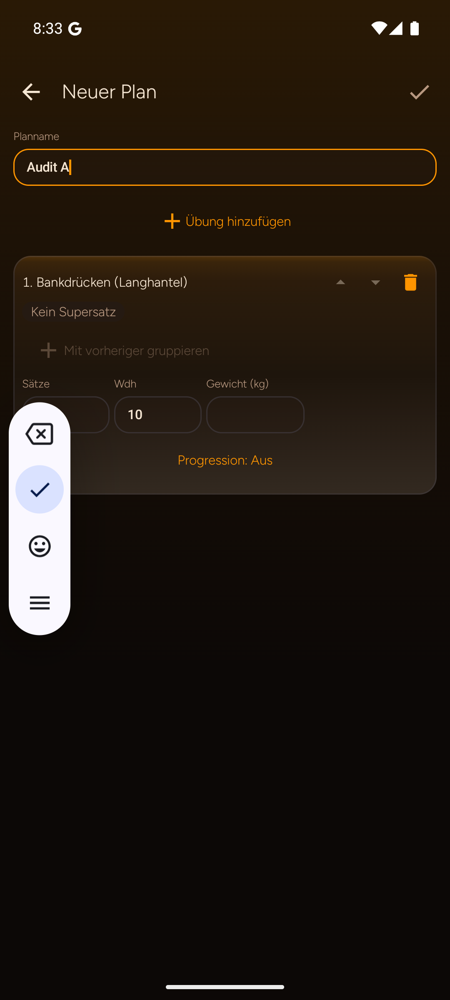

IRONLOG / UX-AUDIT · PLANEDITOR
Aufwärmen, Arbeit und Backoff gezielt vorgeben
Einfach starten mit 3 × 10, bei Bedarf in konkrete Satzzeilen auflösen. Progression bleibt als bestehende Logik sichtbar.
04 / 07
Vorher · Original
Android / Planeditor
Die geprüfte Ansicht arbeitet mit einer einheitlichen Vorgabe je Übung. Die sichtbare Emulator-Tastatur gehört zur Testumgebung.
Nachher · Entwurf
Satzweise steuerbar09:41▮▮▮ 86%
Planvorgabe · Push
Bankdrücken
Aufwärmen 1
Wert bleibt Planvorgabe
20 kg10
Aufwärmen 2
ruhiger Einstieg
40 kg5
Arbeitssatz
Progression vorhanden
60 kg8
Backoff
eigene Vorgabe
55 kg10
Progression aktiv
Bestehende Regel bleibt editierbar. Dieser Screen behauptet keine neue Trainingslogik.
01 / MODUS
Einfach oder satzweise
Der bekannte Einstieg 3 × 10 bleibt schnell. „Satzweise“ öffnet konkrete, editierbare Zeilen.
02 / KONKRET
Warmup getrennt halten
20 kg × 10 und 40 kg × 5 sind Aufwärmen; 60 kg × 8 und 55 kg × 10 bleiben als Arbeitsvorgaben lesbar.
03 / BESTAND
Progression ehrlich zeigen
Progression und Deload existieren bereits. Der Entwurf macht die Regel sichtbar, erfindet keine neue Funktion.
Hinweis zum Original
Die Emulator-Tastatur im Vorher-Bild ist eine Testüberlagerung und kein App-Bug.